Quellen
Klänge der Orchesterinstrumente
University of Iowa Electronic Music Studios, Musical Instrument Samples (Lawrence Fritts). Die Aufnahmen dürfen laut Herausgeber ohne Einschränkungen verwendet werden. Für den music-trainer wurden aus den Einzeltönen zwei kurze Melodien zusammengesetzt (Ode an die Freude, Hänschen klein) und jeder Ton genau nachgestimmt.
Solo-Aufnahmen
Echte Aufnahmen von Wikimedia Commons, jeweils ein kurzer Ausschnitt (9–10 Sekunden), in der Lautstärke angeglichen, ein- und ausgeblendet. Ausschnitte aus Aufnahmen unter CC BY-SA stehen unter derselben Lizenz. Die Kompositionen sind gemeinfrei.
| Instrument | Stück | Aufnahme | Lizenz | Quelle |
|---|---|---|---|---|
| Violine | J. S. Bach: Partita Nr. 3, Gavotte en Rondeau | Vicond | CC BY 3.0 | Original |
| Violine | J. S. Bach: Partita Nr. 2, Allemanda | Vicond | CC BY 3.0 | Original |
| Violoncello | J. S. Bach: Cellosuite Nr. 1, Prélude | Chris (Fopseh) | CC0 | Original |
| Kontrabass | D. Dragonetti: Walzer Nr. 3 | Rainer Lewalter | CC BY-SA 2.0 DE | Original |
| Querflöte | J. S. Bach: Partita für Flöte, Bourrée | Scott Goff | CC BY-SA 2.0 | Original |
| Querflöte | C. Debussy: Syrinx | Sarah Bassingthwaite | CC BY-SA 2.0 | Original |
| Oboe | F. W. Ferling: Etüde Nr. 28 | Aaron Hill | CC BY 3.0 | Original |
| Klarinette | L. v. Beethoven: 8. Sinfonie, 3. Satz (Klarinettensolo) | Richard Haynes | CC BY-SA 4.0 | Original |
| Fagott | L. v. Beethoven: 4. Sinfonie, 1. Satz (Fagottstelle) | Mezzofortist | CC BY-SA 3.0 | Original |
| Fagott | N. Rimski-Korsakow: Scheherazade (Fagottsolo) | Mezzofortist | CC BY-SA 3.0 | Original |
| Trompete | G. Mahler: 5. Sinfonie, Anfang (Trompetensolo) | Peabody Symphony Orchestra | CC0 | Original |
Stilrichtungen
Echte Aufnahmen von Wikimedia Commons und Freesound, je ein Ausschnitt von etwa 10 Sekunden, in der Lautstärke angeglichen, ein- und ausgeblendet. Aufnahmen der U.S. Air Force Band und der U.S. Marine Band sind als Werke der US-Regierung gemeinfrei; die Stücke der Air Force Band haben Mitglieder der Band geschrieben. Ausschnitte aus Aufnahmen unter CC BY-SA stehen unter derselben Lizenz.
| Stück | Aufnahme | Lizenz | Quelle | |
|---|---|---|---|---|
| Klassik | W. A. Mozart: Eine kleine Nachtmusik, 1. Satz | Musopen | Gemeinfrei | Original |
| Klassik | L. v. Beethoven: 5. Sinfonie, 1. Satz | Musopen | Gemeinfrei | Original |
| Klassik | A. Vivaldi: Der Frühling, 1. Satz | The Modena Chamber Orchestra (Musopen) | Gemeinfrei | Original |
| Jazz | „Mr. Bo Hica“ | U.S. Air Force Band of the West, Dimensions in Blue; Komposition SrA David Bandman | Gemeinfrei (US-Regierungswerk) | Original |
| Jazz | „Sheridan Square“ | U.S. Air Force Band, Airmen of Note; Komposition MSgt Kevin Cerovich | Gemeinfrei (US-Regierungswerk) | Original |
| Jazz | „Small Note Boogaloo“ | U.S. Air Force Band, Airmen of Note; Komposition MSgt Ben Patterson | Gemeinfrei (US-Regierungswerk) | Original |
| Pop | „Follow Me“ | U.S. Air Force Band, Max Impact; Komposition Regina Coonrod | Gemeinfrei (US-Regierungswerk) | Original |
| Pop | „One“ | U.S. Air Force Band, Max Impact; Komposition Regina Coonrod | Gemeinfrei (US-Regierungswerk) | Original |
| Pop | „What I Want“ | U.S. Air Force Band, Max Impact; Komposition Matthew Geist | Gemeinfrei (US-Regierungswerk) | Original |
| Pop | „Everybody Up“ | Sascha Ende (filmmusic.io) | CC BY 4.0 | Original |
| Rock | „Big Rock“ | Kevin MacLeod (incompetech.com) | CC BY 3.0 | Original |
| Rock | „Summon the Rawk“ | Kevin MacLeod (incompetech.com) | CC BY 3.0 | Original |
| Rock | „Rock Over London“ | Kevin MacLeod (incompetech.com) | CC BY 3.0 | Original |
| Weltmusik | Gamelan, Java | RTB45 (Freesound); Hofmusiker des Kraton Yogyakarta | CC BY 4.0 | Original |
| Weltmusik | Sitar, Raga Yaman | Tito Dutta | CC BY-SA 3.0 | Original |
| Weltmusik | Samba-Batucada | reinsamba (Freesound) | CC BY 4.0 | Original |
| Weltmusik | Oud | Andy R. Jordan | CC BY-SA 3.0 | Original |
| Weltmusik | Mariachi: Jarabe Tapatío | Lenguaverde (Freesound) | CC0 | Original |
| Elektronische Musik | House-Musik (Demo) | Wickethewok | CC BY-SA 3.0 | Original |
| Elektronische Musik | „High Technologic Beat Explosion“ | Loyalty Freak Music | CC0 | Original |
| Elektronische Musik | „Cut Trance“ | Kevin MacLeod (incompetech.com) | CC BY 3.0 | Original |
| Marschmusik | J. Strauss (Vater): Radetzky-Marsch | „The President’s Own“ U.S. Marine Band | Gemeinfrei (US-Regierungswerk) | Original |
| Marschmusik | J. P. Sousa: The Stars and Stripes Forever | „The President’s Own“ U.S. Marine Band | Gemeinfrei (US-Regierungswerk) | Original |
Wie entsteht der Ton?
Wie oben bearbeitet. Für „gestrichen“ und „geblasen“ kommen zusätzlich die Solo-Aufnahmen der Orchesterinstrumente vor.
| Stück | Aufnahme | Lizenz | Quelle | |
|---|---|---|---|---|
| gestrichen | Violine, G-Dur-Tonleiter, gestrichen | Mutatis mutandis | CC BY-SA 3.0 | Original |
| gestrichen | Violine, leere Saiten gestrichen | Alex Dee | CC BY 2.5 | Original |
| gezupft | Violine, G-Dur-Tonleiter, gezupft (pizzicato) | Mutatis mutandis | CC BY-SA 3.0 | Original |
| gezupft | Gitarre: Romance (anonym) | Jim Greeninger (Musopen) | CC0 | Original |
| gezupft | Gitarre: F. Tárrega, Recuerdos de la Alhambra | Carlo Alberto Boni | CC BY-SA 3.0 | Original |
| gezupft | Harfe: W. A. Mozart, Rondo alla turca | mysticvoices (Freesound) | CC0 | Original |
| geblasen | Sopranblockflöte | Thparkth | Gemeinfrei | Original |
| geblasen | Trompete | trumpetplayer (Freesound) | CC0 | Original |
| angeschlagen | Djembe | Michi Henning | CC0 | Original |
| angeschlagen | Pauken, F-Dur-Dreiklang | Schrauber5 | CC BY-SA 4.0 | Original |
| angeschlagen | Xylofon/Metallofon aus Bali | thedialogueproject (Freesound) | CC0 | Original |
| angeschlagen | Schlagzeug | lennartgreen (Freesound) | CC0 | Original |
Bilder der Orchesterinstrumente
Alle Bilder stammen von Wikimedia Commons. Sie wurden verkleinert, auf weißen Hintergrund gesetzt und als JPEG gespeichert. Bilder unter CC BY-SA und GFDL stehen in dieser bearbeiteten Form unter derselben Lizenz.
| Instrument | Urheber | Lizenz | Quelle | |
|---|---|---|---|---|
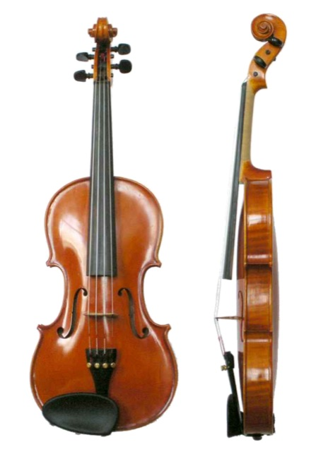 | Violine | Just plain Bill | CC0 | Original |
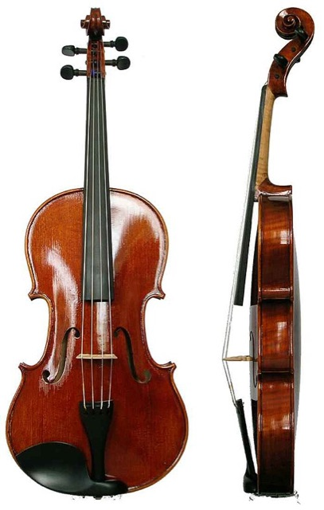 | Bratsche | Just plain Bill | Public domain | Original |
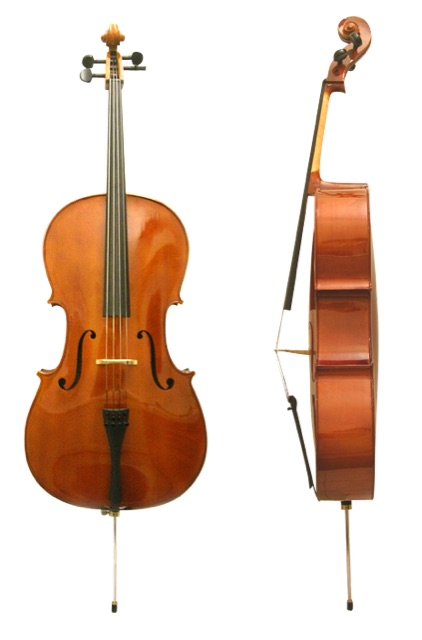 | Violoncello | Georg Feitscher | CC BY 3.0 | Original |
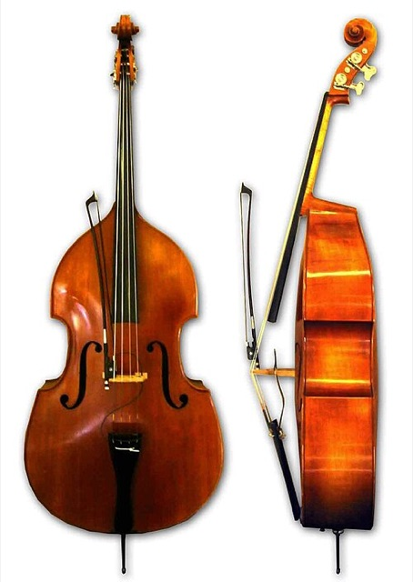 | Kontrabass | User:AndrewKepert | CC BY-SA 3.0 | Original |
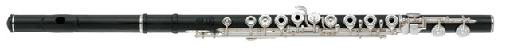 | Querflöte | Yamaha Corporation | CC BY-SA 4.0 | Original |
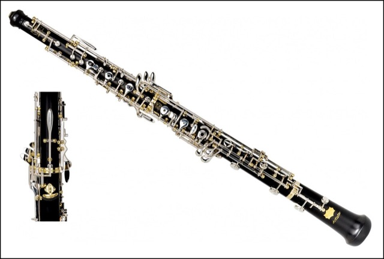 | Oboe | Fratelli Patricola, Editor/Bearbeiter User:Gisbert K | CC BY-SA 4.0 | Original |
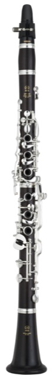 | Klarinette | Yamaha Corporation; remove backround: Habitator terrae | CC BY-SA 4.0 | Original |
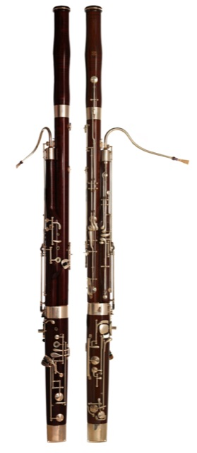 | Fagott | Gregory F. Maxwell | GFDL 1.2 | Original |
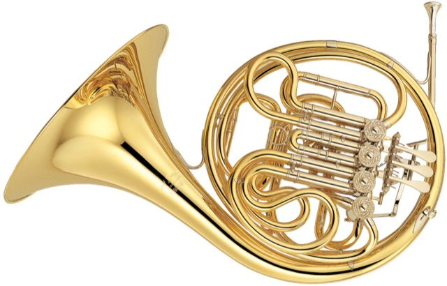 | Horn | Yamaha Corporation; remove backround: Habitator terrae | CC BY-SA 4.0 | Original |
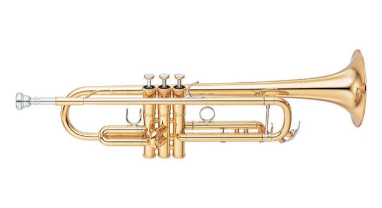 | Trompete | Yamaha Corporation | CC BY-SA 4.0 | Original |
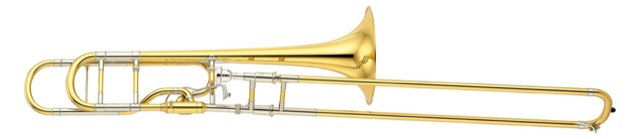 | Posaune | Yamaha Corporation | CC BY-SA 4.0 | Original |
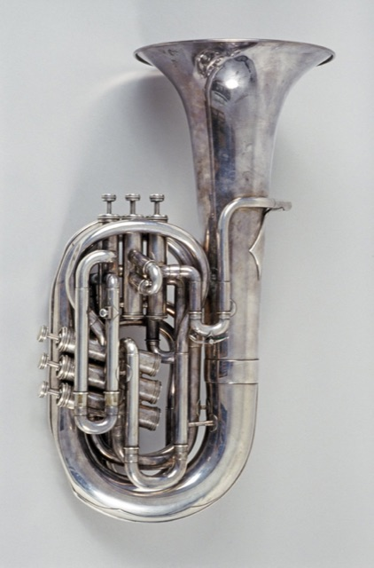 | Tuba | Musical Instruments Museums Edinburgh; photograph by Antonia Reeve, University of Edinburgh. | CC BY 3.0 | Original |
Notenschrift
Violin- und Bassschlüssel, ♯ und ♭ aus „Noto Music“ (Google), lizenziert unter der SIL Open Font License 1.1.
Alles andere
Spiele, Texte, Grafiken und Klänge, die im Browser erzeugt werden: music-trainer by greenboy.